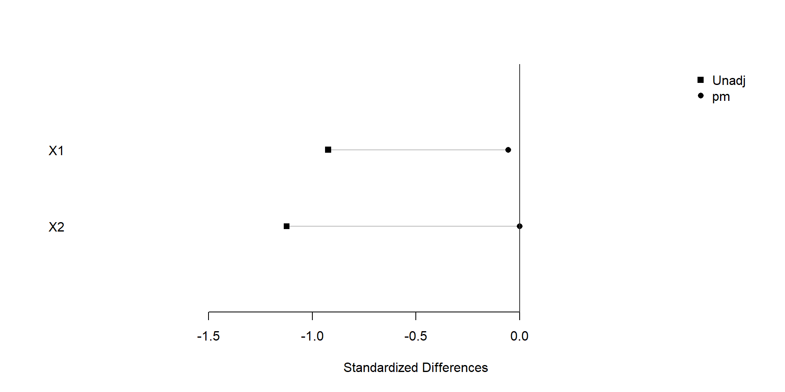
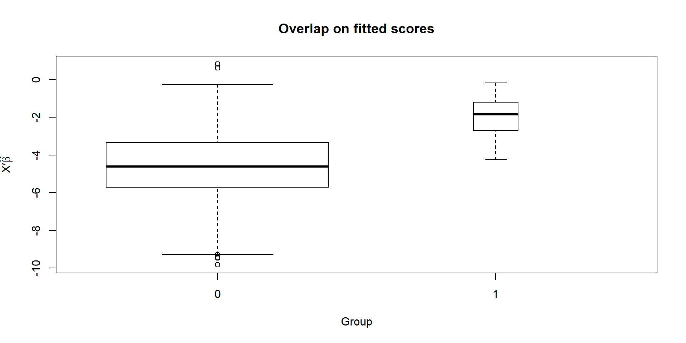
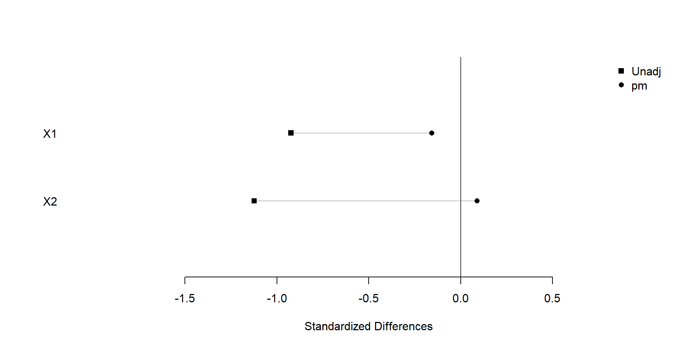

You need to install package optmatch, rcbalance before installing the [SnapMatch] package. It is recommanded to install package lpSolve and RItools as well.
install.packages('optmatch')
install.packages('rcbalance')
install.packages('lpSolve')
install.packages('RItools')
library('optmatch')
library('rcbalance')
library('lpSolve')
library('RItools')
library('SnapMatch')Put some introduction here.
dat <- SnapMatch:::demo()
head(dat)## id trt X1 X2
## 1 t1 1 -1.5604756 0
## 2 t2 1 -1.2301775 1
## 3 t3 1 0.5587083 1
## 4 t4 1 -0.9294916 1
## 5 t5 1 -0.8707123 0
## 6 t6 1 0.7150650 0tail(dat)## id trt X1 X2
## 515 c99 0 1.1146485 2
## 516 c100 0 0.5500440 1
## 517 c100 0 1.2366758 3
## 518 c100 0 0.1390979 1
## 519 c100 0 0.4102751 2
## 520 c100 0 -0.5584569 5We can match by mahalanobis/euclidean/rank_mahalanobis distance.
# calculate the distance matrix
dis <- match_on(trt~X1+X2, data = dat, method="mahalanobis")
# conduct optimal matching. 'Id' is the id column for each subject
pm <- optimatch_snap(dis, data = dat, id = 'id')
# plot result
plot(xBalance(trt ~ X1+X2+strata(pm), data=dat), xlim=c(-2,1), ylim=c(0,3))
We find that covariate balance is achieved after snapshot matching.
# calculate propensity score
prop <- glm(trt ~ X1+X2, data = dat, family = binomial())
boxplot(prop)
The groups do overlap, if not greatly. It may be wise to restrict the sample to the region of overlap, at least roughly.
# conduct optimal matching by propensity score. 'Id' is the id column for each subject
pm <- optimatch_snap(prop, data = dat, id = 'id')
# plot result
plot(xBalance(trt ~ X1+X2+strata(pm), data=dat), xlim=c(-2,1), ylim=c(0,3))We find that similar covariate balance is achieved after snapshot matching.
The package accepts ‘match_on’ function from ‘optmatch’ package as a distance matrix. For example, here we show how to perform a snapshot matching within a propensity score caliper.
# conduct optimal matching by propensity score. 'Id' is the id column for each subject
dis <- match_on(glm(trt ~ X1+X2, data = dat, family = binomial()), data = dat, id = 'id')
dis[1:5,1:5]## control
## treatment 21 22 23 24 25
## 1 3.438599 1.5015123 2.2027200 2.9487052 1.4033947
## 2 2.488007 0.5509201 1.2521277 1.9981130 0.4528025
## 3 1.434081 0.5030065 0.1982011 0.9441864 0.6011241
## 4 2.310857 0.3737702 1.0749779 1.8209631 0.2756526
## 5 3.032224 1.0951365 1.7963441 2.5423294 0.9970189 # add caliper
dis <- caliper(dis,2) + dis
dis[1:5,1:5]## control
## treated 21 22 23 24 25
## 1 Inf 1.5015123 Inf Inf 1.4033947
## 2 Inf 0.5509201 1.2521277 1.9981130 0.4528025
## 3 1.434081 0.5030065 0.1982011 0.9441864 0.6011241
## 4 Inf 0.3737702 1.0749779 1.8209631 0.2756526
## 5 Inf 1.0951365 1.7963441 Inf 0.9970189 # conduct optimal matching
dis <- as.matrix(dis)
dis[which(is.infinite(dis))] <- 100
pm <- optimatch_snap(dis, data = dat, id = 'id')
# plot result
plot(xBalance(trt ~ X1+X2+strata(pm), data=dat), xlim=c(-2,1), ylim=c(0,3))